hosté >
| zpátky mezi lidi |
|
Jakub Šlégr |
kudykekt > VOŠH s TK (2002)
bio > ??? > ??? > 2002-5 studium Vyšší odborní školy herecké Praha, skupina pod vedením Ivetky Duškové a Jiøího Trnky > absolventská pøedstavení: Kornél Hamvai - Kitty Flynn (Charley), Paví král (Bratøi), Oheò na hoøe (Had), Moliere - Tartuffe (Kleantes, Valér), Iveta Dušková/Suchı/Šlitr - Bar Honolulu ( Potrhlı mu), Vincenc Bouda - Rajská hudba (Viktor), Iveta Dušková - Vlak (kluk s kytarou + vlastní píseò Svítá)
> v listopadu 2004 nazkoušel roli Liduše v Monopolech (revisited) a hrál v alternaci za Bogdana Cieœlara na Bránici dokoøán > za Bogdana zaskoèil a nové role vytvoøil i v poøadu Uïoblinky v únoru 2006 a dále
ivé role:
Liduš Muzikantskı (Monopoly) > 6/11/04 Praha
nìvskı prospekt (Happíseò) > 13/2/06 Praha
Pátı (Kurs rozporù) > 13/2/06 Praha
kytara + zpìv (Svítá upgrade) > 13/2/06 Praha
Zvíøe (Nejúspìšnìjší hra všech dob) > 13/2/06 Praha + 24/5/06 Praha
zpìv + tanec (Gospel) > 13/2/06 Praha
| zpátky mezi lidi |
|
Petra Bílková |
kudykekt > VOŠH s TK (2002)
bio > narozena v Kravaøích > 2002-5 studium Vyšší odborní školy herecké Praha, skupina pod vedením Ivetky Duškové a Jiøího Trnky > absolventská pøedstavení: Oheò nahoøe, Tartuffe, Bar Honolulu, Rajská hudba, Vlak... ...doplnit... > od listopadu 2005 hraje ve høe Škola malého stromu s Ivetkou Duškovou
> na podzim 2005 si ji Krvik Totr vybrali do svého poøadu Uïoblinky (premiéra 4. 12. 2005)
ivé role:
Baèa (Opyl omilcùv) > 4/12/05 Praha + 13/2/06 Praha
Cedule (Nejúspìšnìjší hra všech dob) > 4/12/05 Praha + 13/2/06 Praha
Pani (Strašidla) > 4/12/05 Praha + 13/2/06 Praha
Parabola (Obec spisovatelù) > 4/12/05 Praha
nìvskı prospekt (Happíseò) > 13/2/06 Praha
Partnerka (Svítá upgrade) > 13/2/06 Praha

 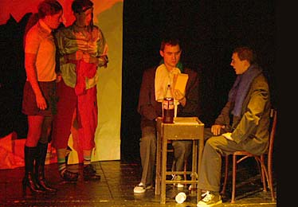
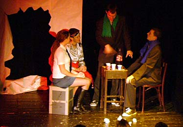
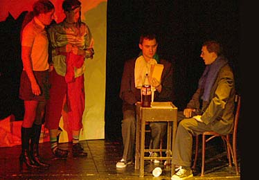
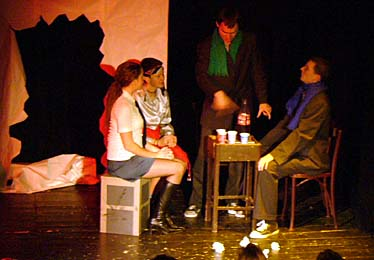
| zpátky mezi lidi |
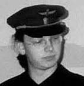 |
Ondøej Homola |
kudykekt > VOŠH s TK (2001)
bio > nedostudent VOŠ herecké, ekonom, hudebník (Mièurin undergroundové hudby - kapely Tatramatka, Veselé dìti, V tunelu nic nestalo ad.) > úèastenec rùznıch (nedokonèenıch) projektù podobného zrna (TK s ním spolupracoval na projektu "Veselé dìti", Ondøej s KT naopak v muzikálu Ing. Hercíková)
> v roce 2002 se stal prvním profesionálním hostem Krvik Totr > 2004+5 pozval KT do svého Klubu Progres v Èeské Lípì, spoleèná produkce
ivé role:
Prùvodèí (Vrada v Orient expresu) > 17/12/02 Praha
Vedoucí (Úskok) > 17/12/02 Praha
Brigádnice Homola (Pan Farmer øíká / Delvita plus) > 20/3/04 Èeská Lípa
Metaøista (Elitní utopie) > 20/3/04 Èeská Lípa
basa, zpìv (Liho blues - Kapela) > 20/3/04 Èeská Lípa + (Limo) 2/4/05 Èeská Lípa
sukcesní chlápek (Jak je dùleité míti Filipa) > 2/4/05 Èeská Lípa
Role mu na tìlo napsané:
Brigádnice Homola / Pan Farmer øíká, 2003 (poèítalo se s jeho pravidelnou alternací)
Metaøista / Elitní utopie, 2003
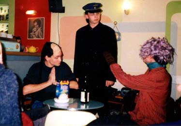


| zpátky mezi lidi |
| Adéla Tesaøíková |
kudykekt > SGJŠ s PN (1996)
bio > narozena 1981 v Praze > básníøka, spisovatelka, skladatelka, malíøka a fotografka, ale všechno popøe > roku 1996 byla ve Viole > od roku 1997 sestrou PN > s PN vede literárnì-umìlecko-bohémskı ivot nejen v rámci spoleènıch Všemi smìry (od 1997) > své texty èetla na spoleèném vystoupení s KT (1998) > hereèka Divadla Velkého Tvrdého Marwina (1998) > zorganizátorka pøedvedení ocenìné hry Tam, kde Zem není (1999) > na jevištì ke KT byla v lednu 2005 vtaena spontánnì z publika
ivé role:
Lilie (Tají dech) > 21/1/05 Praha
| zpátky mezi lidi |
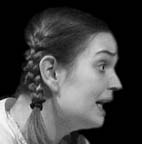 |
Klára Hanušová |
kudykekt > VOŠH s TK (2001)
bio > ??? > ??? > dcérka Jaruš Hanušové > 2002? absolventka Vyšší odborné školy herecké Praha, skupina pod vedením ??? > absolventská pøedstavení: ??? > posléze ???, spatøena v TV inscenacích apod., dlouholeté úèinkování v Divadle Extrém (zakládající èlen, hrála snad ve všech inscenacích, napø. Milada, Prázdninové iluze, Naše Pobøení hlídka..., do 2005) > od podzimu 2005 angamá v Šumperku >
> Krvik Totr ji a Františka Èachotského poádali, aby naplnili na Návštìvním dnu Okénko Ference Èukotského svım zpracováním Puchmajerovy bajky Vrána a liška - poté pomohla Krvik Totr v jediné netrojièkové scénce veèera
ivé role:
ena v kinì (Die Happyend) > 21/1/05 Praha
| zpátky mezi lidi |
| Lucie Janovská |
kudykekt > Literární akademie s PN (2001)
bio > narozena 1982 v jiních Èechách > úèinkovala v divadle v Ústí nad Labem > 2001-6 studium Literární akademie Praha
> host Krvik Totr od bøezna 2003, od listopadu 2003 do záøí 2004 èlenka Divadílny
ps > první ena v souboru a první ena, jí byla napsána role na tìlo
ivé role:
Novotòa (Generálka) > 26/3/03 Praha
zvonek (Draèí doupì) > 26/3/03 Praha
Lilie (Tají dech) > 26/3/03 Praha
Brigádnice Homola (Pan Farmer øíká / Delvita Plus) > 26/3/03 Praha + 19/5/03 Praha + 19/9/03 Jeseník + 1/11/03 Praha + 2/12/03 Praha + 6/3/04 Praha
Pucy Pucy (The Battle of Blondın) > 19/5/03 Praha + 4/6/03 Praha + 1/11/03 Praha + 6/3/04 Praha
zvonek (Bakaláøi) > 20/5/03 Praha
zpìv (Prvobytnì pospolná spoleènost: Kompot) > 4/6/03 Praha
zpìv (Písnièka na dobrou noc) > 19/9/03 Jeseník
bublifuk (Happíseò) > 1/11/03 Praha + 1/12/03 Praha
Lucie (Jeseník / Hot Dog) > 1/12/03 Praha
párkodrák (Párky v rohliky!) > 1/12/03 Praha
ivı obraz (Liho Monument) > 1/12/03 Praha
Koátko (Tøi dìjství) > 6/3/04 Praha
Kamélie (Monopoly) > 21/6/04 Praha + 29/6/04 Hradec Králové
Role jí na tìlo napsané:
Brigádnice Homola / Pan Farmer øíká, 2003 > hrála na premiéøe
Novotòa / Generálka, 2003 > hrála na premiéøe
Pucy Pucy / The Battle of Blondın, 2003 > hrála na premiéøe
Funkce / Párky v rohliky!, 2003 > nehrála
Lucie / Jeseník, 2003
Kamélie / Monopoly, 2003-4 > hrála na premiéøe


 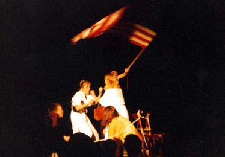
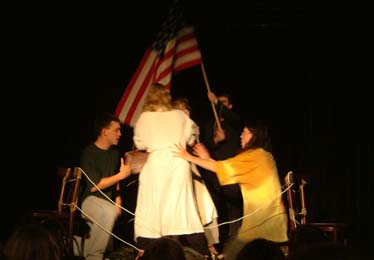
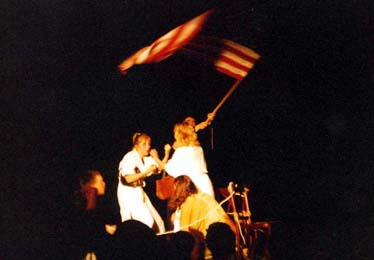
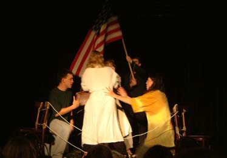
 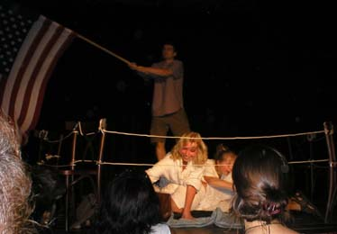
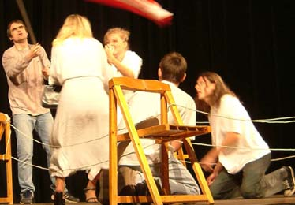
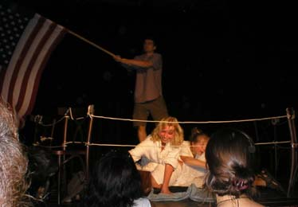
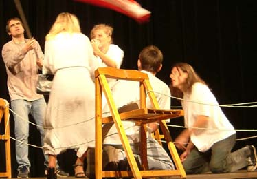


 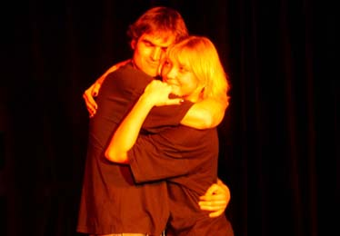
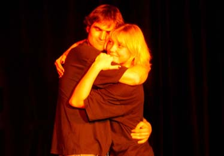
 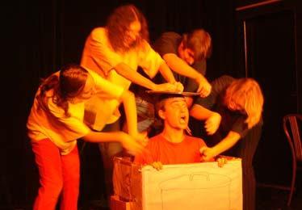
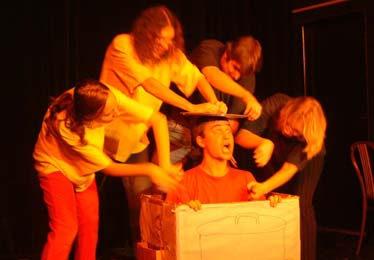
 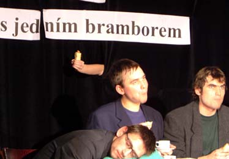
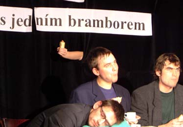
 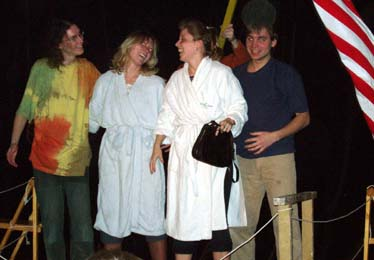
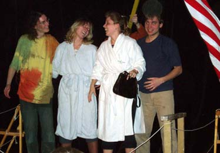


 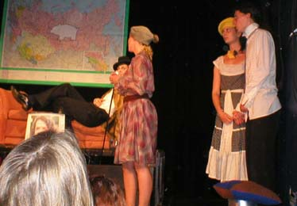
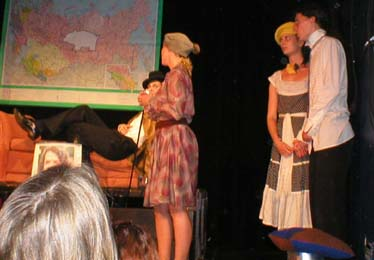


 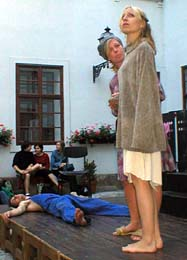
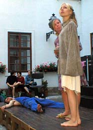
| zpátky mezi lidi |
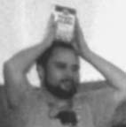 |
Jan Toman (aka Boldrik) |
kudykekt > SGJŠ (1999) a Literární akademie s PN (2001, respe 2003)
bio > narozen 1980 > ve jménu èasopisu Yettey sponzoroval èasto vodkou Liho blues, KT se mu odmìòovali rolí Regálu
ivé role:
Regál (Pan Farmer øíká / Delvita plus) > 5/11/03 Plzeò + 18/11/03 Plzeò + 2/12/03 Praha
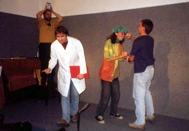 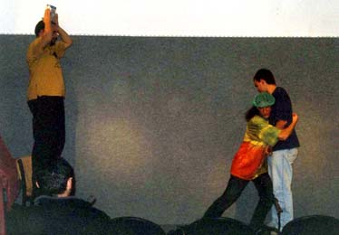
| zpátky mezi lidi |
|
Pavel Langhammer |
kudykekt > ZŠ nám. Svobody s PN, TK a FV (1987)
bio > narozen 1979 v Praze > od 1997 studium informatiky a knihovnictví na FF UK Praha > 1998 zaloil s Petrem Novotnım existenciálnì-experimentální skupinu PPP, bezbøeze aktivní, leè ineditní (vıjimkou je opus Podám si ruku s Klausem, kterı pouívají Krvik Totr pøi svıch vystoupeních) > od 2001 studium na HTF UK >
> od 2001 první skuteènı host v Krvik Totr, úèastník vìtšiny velkıch vystoupení, stálice v pøed-Divadílním obdobím > mnohé role mu byly psány pøímo na tìlo > úèastník mnoha desek a nahrávek > autor hudby písòovıch textù KT > v mnohém technickı poradce > 2003 odmítl úèast v herecké Divadílnì a vyádal si titul "vìèného hosta"
ivé role:
Mireèek (Sitcom) > 15/11/01 Praha
Zvukaø (King Kong v NY) > 15/11/01 Praha
Donašeè zpráv (Naše Rádio, New York) > 15/11/01 Praha
Øidìtièky, Policajti, Doktoøi (Pùldne na vsi) > 15/11/01 Praha
Uklízeèka (Cikánka) > 22/5/02 Praha
Kout (Generálka) > 26/3/03 Praha
Mladá fronta (Draèí doupì) > 26/3/03 Praha + 28/3/03 Mnichovice
zpìv (Tají dech) > 26/3/03 Praha + 28/3/03 Mnichovice
Regál (Pan Farmer øíká / Delvita plus) > 26/3/03 Praha + 19/5/03 Praha + 1/11/03 Praha
Brigádnice Homola (Pan Farmer øíká / Delvita plus) > 28/3/03 Mnichovice
Grejtbritejn (Bakaláøi) > 20/5/03 Praha
Jehovista Skotlandjard (Bakaláøi) > 20/5/03 Praha
bublifuk (Happíseò) > 1/11/03 Praha + 1/12/03 Praha
Duch-ovod (Vánoèní pøíbìh) > 1/12/03 Praha
Ovce (Vánoèní pøíbìh) > 1/12/03 Praha
ivı obraz (Liho Monument) > 1/12/03 Praha
Studiové role:
zpìv (Jest tvrdı) > 2002
kytara (Cow Bell Jam - SP Jest tvrdı) > 2002
Jehovista Skotlandjard (Bakaláøi) > 2003
Hlas (Vánoèní pøíbìh) > 2003
+ s PN v rámci PPP podíl na desce Teroristé to mají jisté (2001) > Svìt se zmìnil, Odpùrce
+ s PN v rámci PPP deska Podám si ruku s Klausem (2003), hraná na vystoupeních KT
Pro KT napsal:
Štìstí chodí v pohorách (hudba) > 2001
Tají dech (hudba) > 2003
Role mu na tìlo napsané:
Uklízeèka / Cikánka, 2002 > hrál na premiéøe
Julie / Slavná balkónová scéna, 2002 > nehrál
postava na plátnì Casablanky / Die Happyend, 2002 > nehrál
Ovce / Vánoèní pøíbìh, 2002 > hrál na premiéøe
Kout / Generálka, 2003 > hrál na premiéøe
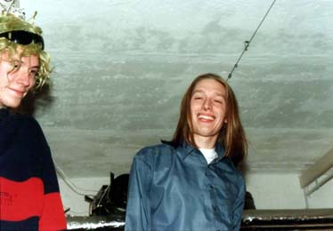
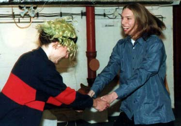
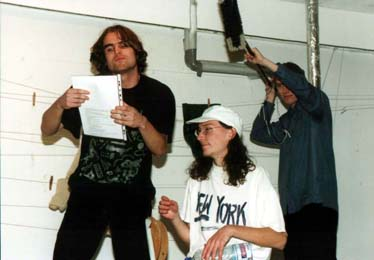
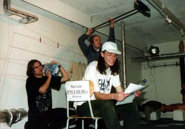
 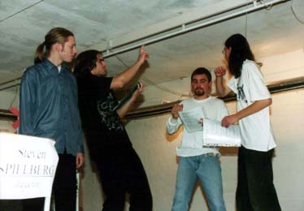
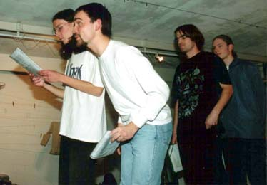
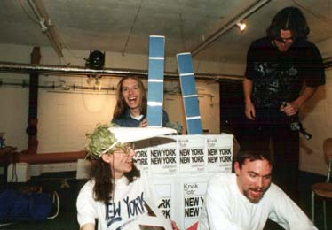 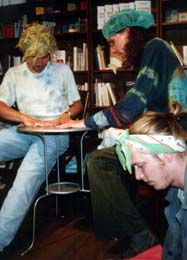
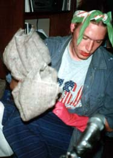
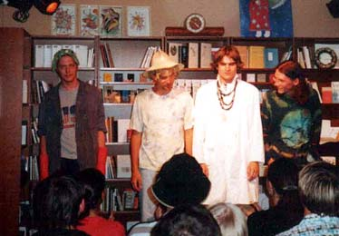
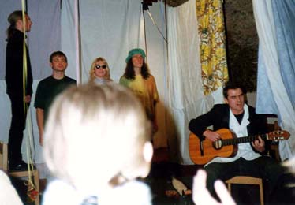
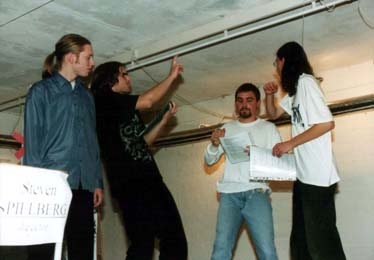
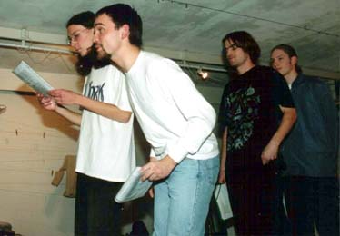
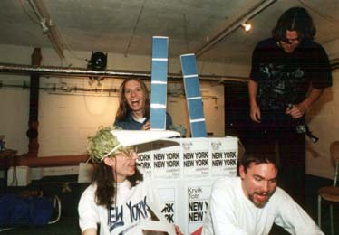 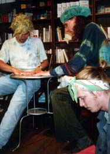
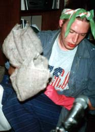
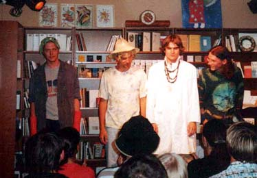
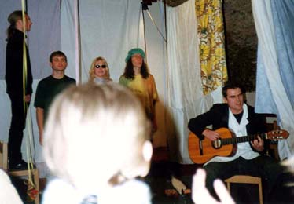
 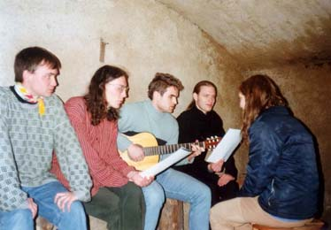
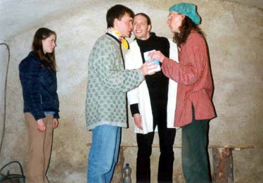
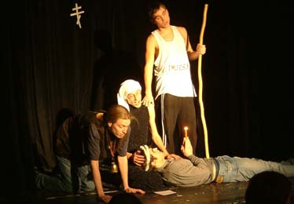
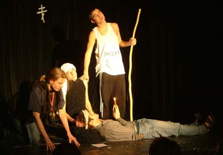
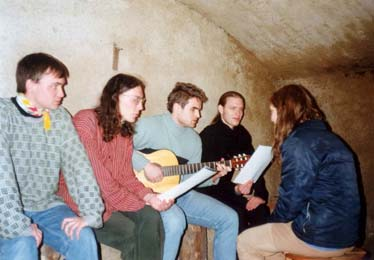
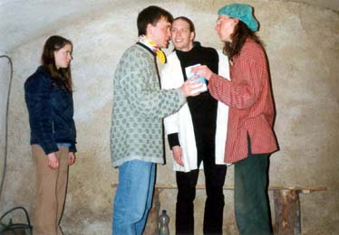
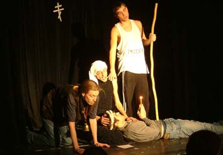
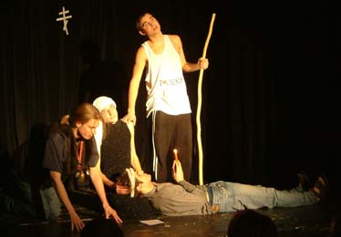
| zpátky mezi lidi |
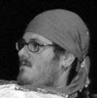 |
Willy |
kudykekt > Literární akademie s PN (2003)
bio > poté, co roli Babièek odmítl Petr Šabach, jemu byly napsány, zachránil KT Willy, kterı Babièky odehrál na premiéøe
ivé role:
Babièky (Tøi dìjství) > 1/12/03 Praha
ivı obraz (Liho Monument) > 1/12/03 Praha
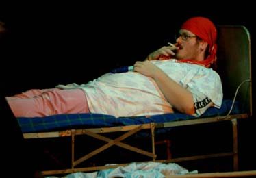
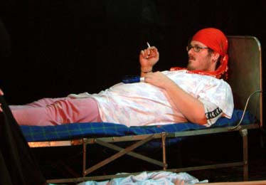
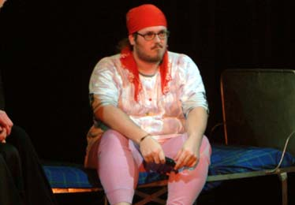
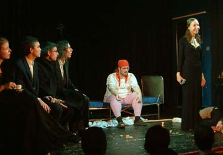
 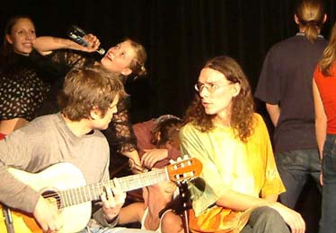
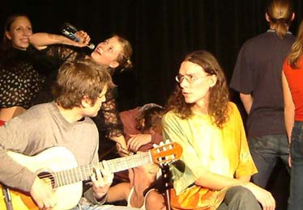
| zpátky mezi lidi |
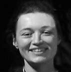 |
Eva Sedláková |
kudykekt > Literární akademie s PN (2001)
bio > narozena 1976 > nejprve podovypíjela mnohé Liho (blues), na podzim 2003 zaskoèila za Lucii Janovskou
ivé role:
Eva (Jeseník / Hot Dog) > 1/11/03 Praha
bublifuk (Happíseò) > 1/11/03 Praha
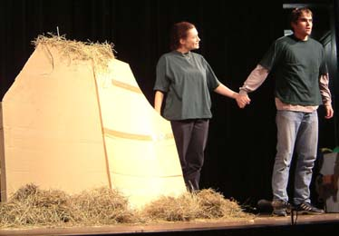 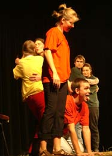 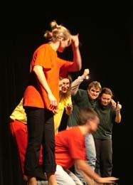 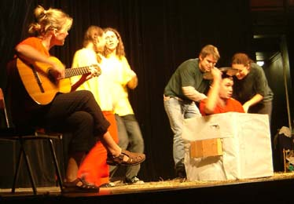
| zpátky mezi lidi |
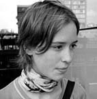 |
Pavla Fridrichová |
kudykekt > Literární akademie s PN (2001)
bio > narozena 1982 v Praze > úèastna mnoha dramatickıch spolkù > 1999 úèinkovala v divadle Extrém > 2001-6 Literární akademie v Praze > básníøka a performerka Roztroušené symbiózy (spolu s Katjou Klimešovou) > pro Krvik Totr poøídila v roce 2003 skvìlé fotografie a rovnì si zahrála
ps > pf
ivé role:
Lilie (Tají dech) > 28/3/03 Mnichovice
Regál (Pan Farmer øíká / Delvita plus) > 28/3/03 Mnichovice
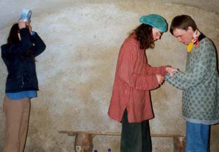
| zpátky mezi lidi |
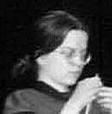 |
Zuzana Bubnová |
kudykekt > FSV UK s PN (1997)
bio > iniciátorka experimentálního projektu divadelní hry "Šest lidí u stolu" (2000), jí se zúèastnili i KT > v povídkovıch dobách (98-01) zvala KT na svá vystoupení na bohnickıch Pošetkách > spoleèná spolupráce (1998 hráli KT v její povídce, 2001 hrála ona v povídce KT)
ivé role:
Vypravìè (text ZB Cesta na sever, kde KT hostovali) > 15/10/98 Praha
Šestka, Dcera (hra ZB a kol. vèetnì KT "Šest lidí u stolu", kde hrál i PN) > 12/5/00 Praha
Sestra (Sitcom) > 15/11/01 Praha
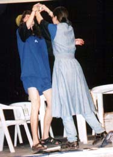 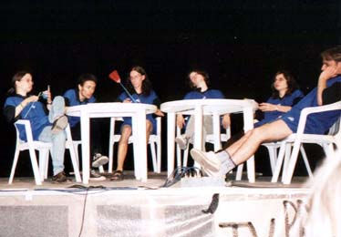 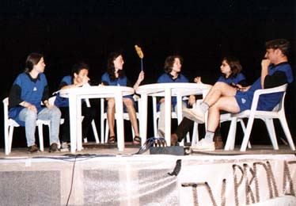
| zpátky mezi lidi |
| Pan Ahojka |
vzácnı host > v roce 2004 inspiroval spolu s Paramhansem Svámím Mahéšvaránandou hru Monopoly, ve které spolu se svımi bratry na ivot a ahoj hrál
ivé role:
Pan Ahojka (Monopoly) > 21/6/04 Praha
| zpátky mezi lidi |
| King Kong |
vzácnı host > v roce 2001 se zúèastnil "obìtem tour", kde hrál ve scénce King Kong v NY, napsané mu pøímo na tìlo
ivé role:
King Kong (King Kong v NY) > 27/10/01 Mnichovice + 15/11/01 Praha
© 2005 Krvik Totr Limity.